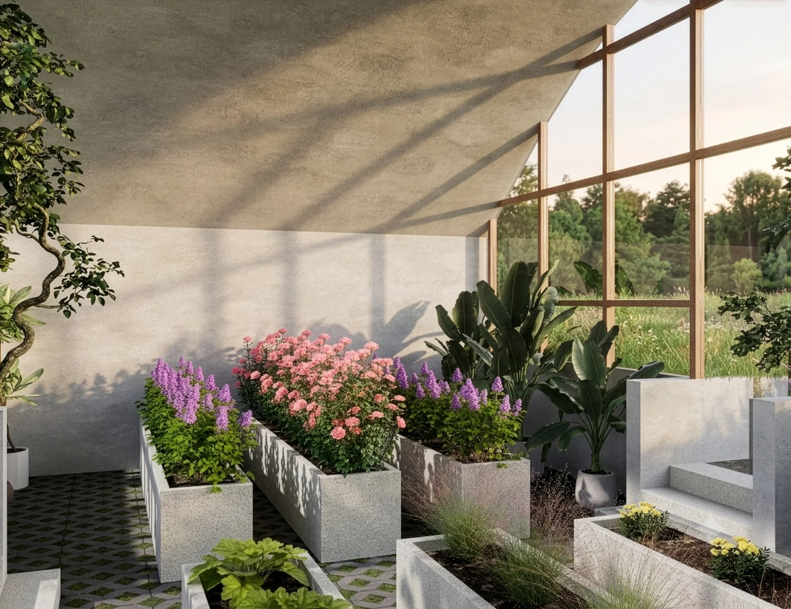
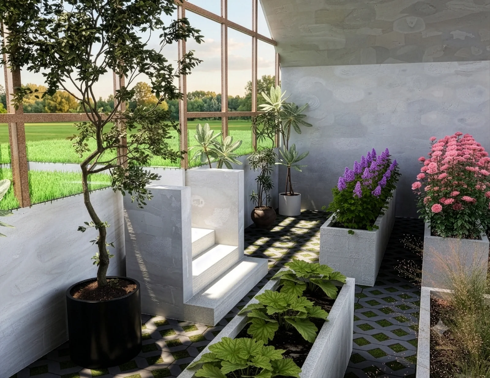
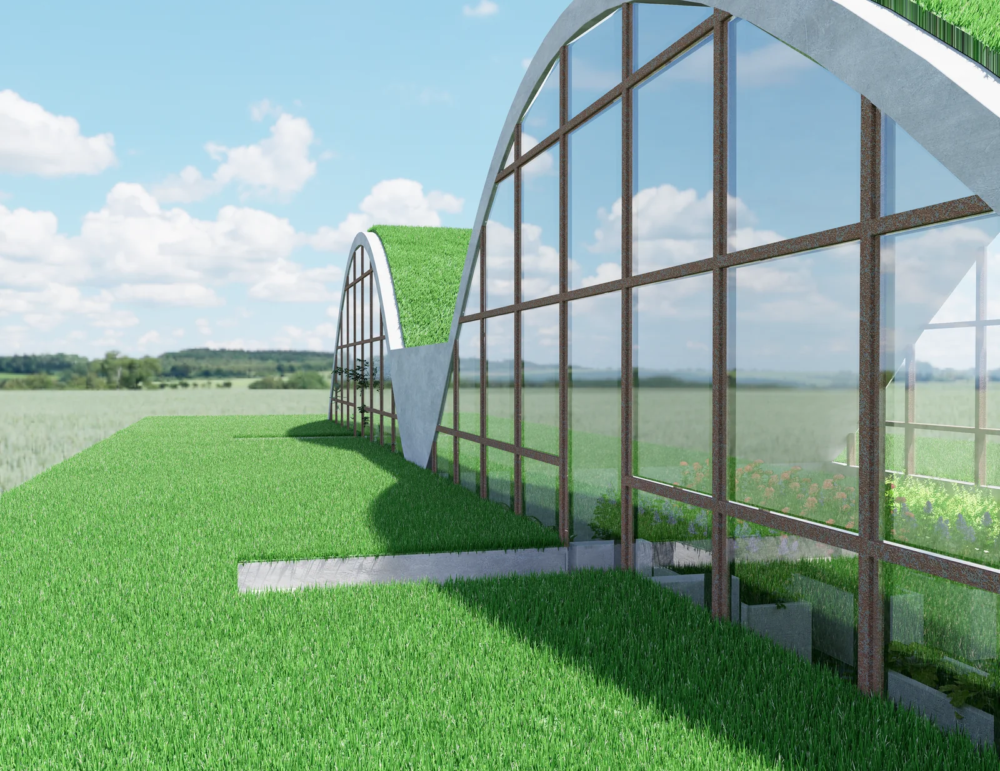

COMPLUVIO
La forma segue l’acqua.
- Corso
- Laboratorio di Metaprogetto
- Sede
- Politecnico di Milano · A.A. 2024/25
- Docenti
- Agnese Rebaglio, Luigi Paolo Brenna, Alessandro Colombo
- Luogo
- Cascina Linterno · Milano
- Principio
- Raccolta dell’acqua piovana
- Autore
- Filippo Antonio Visentin
- Ambito
- Architettura · Paesaggio · 2025

E se fosse l’acqua a disegnare lo spazio?
Leggere un fenomeno naturale e trasformarlo in una regola costruttiva, per uno spazio da vivere insieme.
Una serra sociale e terapeutica per Cascina Linterno, Milano. Due volte vetrate si incontrano in una linea di raccolta: l’acqua piovana diventa principio generativo dello spazio.
La copertura convoglia la pioggia verso un serbatoio per l’irrigazione. Il progetto esplora un ciclo di recupero dell’acqua e un rapporto continuo tra coltivazione, incontro e paesaggio. La luce attraversa la struttura e accompagna le attività all’interno.
Coltivare relazioni
Il progetto per Cascina Linterno integra una serra sociale e terapeutica nel rapporto tra costruito e paesaggio. La coltivazione diventa occasione di attività condivisa, dentro un ambiente protetto ma visivamente aperto all’esterno.


La sezione raccoglie
Le due volte si incontrano in una depressione centrale che convoglia la pioggia verso la raccolta. Il sistema studiato collega serbatoio e irrigazione a bassa pressione. Il recupero dell’acqua è un obiettivo progettuale: forma della copertura e organizzazione della coltivazione sono pensate insieme.
Processo — fotografie
2 fotografie
F.03Luce e materia 
F.04La volta e il prato